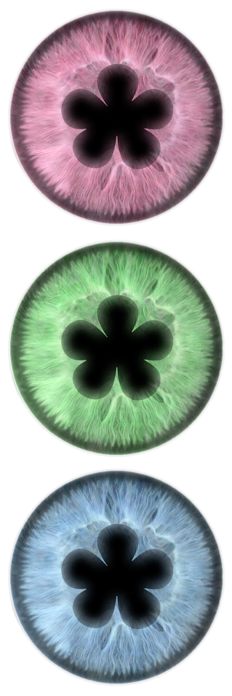

Florist NYC / Blossom
AR. Fashion (2020)
Falling petals, pastel decals and interchangeable eyes. This Instagram filter was created for the NYC-based bag and accessory brand Florist, in reference to the ethereal qualities of its embroidered floral motifs.
Textures and AR production / Helena Dong
✿ Try Blossom
AR. Fashion (2020)
Falling petals, pastel decals and interchangeable eyes. This Instagram filter was created for the NYC-based bag and accessory brand Florist, in reference to the ethereal qualities of its embroidered floral motifs.
Textures and AR production / Helena Dong
✿ Try Blossom